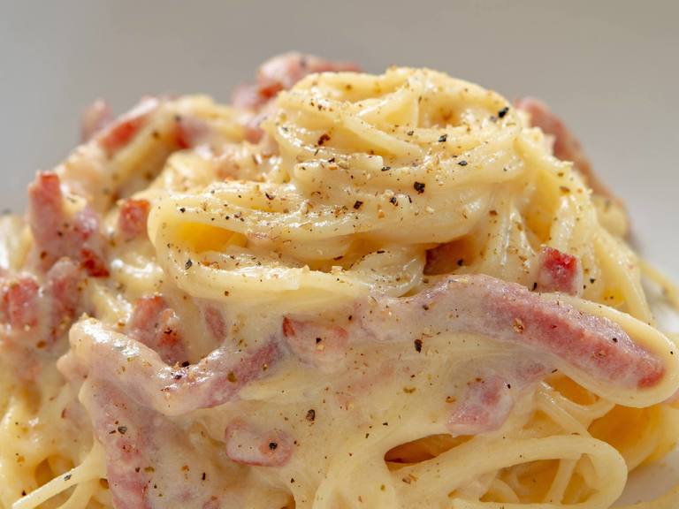
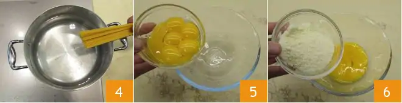

Mighty Odin the legendary chef, brings us Spaghetti Carbonara—a divine Italian delight. Al dente spaghetti meets a creamy sauce of eggs, Pecorino Romano cheese, and crispy guanciale. The result? An enchanting blend of savory, smoky flavors that captivate all who taste it. A true masterpiece of Odin's culinary prowess.
To prepare spaghetti carbonara start by putting a pot of salted water on the burner to cook the pasta. In the meantime, remove the pork rind from the guanciale (1) and cut it first into slices and then into strips about 1/2" (1cm) (2) thick. The removed rind can be reused to flavor other things. Put the pieces into a non-stick pan (3) and brown for about 15 minutes over medium heat, being careful not to burn it or it will smell too strong.
Check out the Spaghetti Carbonara Recipes